Air Quality Data
🧩 Learning Goals
By the end of this lesson, you should be able to:
- Go through a data quality checklist when data wrangling
- Explain the difference between MCAR, MAR, and MNAR missing data mechanisms
- Assess what missing data mechanisms might be at play in a given dataset
- Use visualizations to explore missing data patterns
- Explain why multiple imputation is preferred to single imputation
- Explain how a simulation study can be used to investigate properties of statistical methods
Data Quality Checklist
Assumptions
When wrangling or cleaning data, make sure to check the assumptions you are making about the data to ensure you don’t lose data quality.
Data Parsing
When reading data into a different data format:
- Raw Data. Always keep the original raw data and do not manually change it.
- Wrangling. When wrangling date, check that the result is as expected by inspecting rows or writing test cases.
-
Dates. When using
lubridateto parse dates and times, ensure the strings are consistently ordered and formatted correctly, eg, mm/dd/yy vs. dd/mm/yy. -
Strings. When using
stringrto parse strings with regular expressions, check example rows to ensure that the pattern captured all of the examples you want and excluded the patterns you don’t want. - Missing Data. Always check for missing values to see if the missing ones are expected given the original data.
Data Joining
- Identify missing values in the key variables and decide how to handle them before the merge process (e.g., omitting rows with missing values, imputing missing values).
- Decide on the correct join type (left, right, inner, full, etc.) OR if the data structure is the same use
list_rbind()to bind rows orlist_cbind()to bind columns. - If doing a join, make sure that the key variables (
by) have the same meaning in both datasets and are represented in the same way (e.g., id = 1 to 20 in first dataset will match id = 1 - 20 in undesirable ways) - Predict the number of rows that will result from the join and double check the
anti_join()to see which rows did not find a match. - Check for duplicate records within each dataset and ensure they are handled appropriately before merging.
- Verify that the merged dataset maintains consistency with the original datasets in terms of data values, variable names, and variable types.
- Perform some preliminary analysis or validation checks on the merged dataset to ensure that it meets the requirements of your analysis.
Sanity Check
Visualize your data!!!
- Do the right number of points appear?
- Do the values seem reasonable?
Explicit vs. Implicit Missing Data
Explicit missing data is data that is explicitly marked as missing. In R, this is done with NA.
Implicit missing data is data that is missing but not explicitly marked as such.
- This can happen when an entire row is missing from a dataset.
- For example, if a study participant doesn’t attend a follow-up visit. It maybe not even be recorded in the data.
We need to make implicit missingness explicit before we can work with the data.
- Consider the combinations of variables that you’d expect to be fully present in a complete dataset.
- If a combination is missing, you can create a new row with explicit missing values.
- For example, if you expect every participant (each has a unique
pid) to have an observation for eachvisit, you could use the functioncomplete()to create that new row and plug in values ofNAfor the missing data.
- For example, if you expect every participant (each has a unique
- If a combination is missing, you can create a new row with explicit missing values.
Deal with Missing Data
If you have explicit missing data, there are 3 main ways of proceeding:
- Drop the cases or rows with any missing data from the analysis–a complete case analysis
- Pro: Easy to implement
- Con: reduces sample size, introduces bias if the missing data is not “missing completely at random (MCAR)”
- Create a category for missing values.
- Example: The survey question “What is your gender?” might only provide two possible responses: “male” and “female”. Missing values for this could indicate that the respondent uses a non-binary designation. Instead of dropping these cases, treating the missing data as its own category (“Does not wish to answer”) would be more appropriate.
- Pros: Maintains sample size, may help us if data is “missing not at random (MNAR)”
- Cons: Not directly applicable to continuous outcomes (could include interactions with a categorical version in models to account for it)
-
Impute (or fill in values for) the missing data using imputation algorithms.
- Imputation algorithms can be as simple as replacing missing values with the mean of the non-missing values (very simplistic).
- Regression imputation algorithms use models to predict missing values as a function of other variables in the data.
- Pros: Maintains sample size, multiple regression imputation minimizes bias if “missing at random (MAR)”
- Cons: Computationally intensive
Deciding between these options and proceeding with choosing finer details within an option requires an understanding of the mechanism by which data become missing.
Missing Data Mechanisms
The reasons for which a variable might have missing data are divided into 3 mechanisms: MCAR, MAR, and MNAR.
Within a dataset, multiple mechanisms may be present–we need to consider the missingness mechanism for each variable individually.
Missing Completely at Random (MCAR)
- The probability of missing data for a variable is the same for all cases. Implies that causes of the missing data are unrelated to the data. (https://stefvanbuuren.name/fimd/sec-MCAR.html)
- Examples:
- Measurement device that runs out of batteries causes the remainder of observations for the day to be missing.
- Data entry software requires a particular field to be typo-free, and missing values are introduced when there are typos.
- Implications for downstream work:
- If a variable has MCAR missingness, a complete case analysis will be unbiased (still valid).
- However, with a lot of missing observations, a complete case analysis will suffer from loss of statistical power (ability to detect a real difference), and imputation will be useful to retain the original sample size.
Missing at Random (MAR)
- The probability of missing data is related to observed variables but unrelated to unobserved information.
- Examples:
- Blood pressure measurements tend to be missing in patients in worse health. (Those in worse health are more likely to miss clinic visits.) Better and worse health can be measured by a variety of indicators in their health record.
- In a survey, older people are more likely to report their income than younger people. Missingness is related to the observed age variable, but not to unobserved information.
- Implications for downstream work:
- Try to use imputation methods that predict the value of the missing variables from other observed variables. Assessing whether this can be done accurately takes some exploration–we’ll explore this shortly.
Missing Not at Random (MNAR)
- The probability of missing data is related to unobserved variables (and probably observed variables too).
- Examples:
- Blood pressure measurements are more likely to be missing for those with the highest blood pressure. This is MNAR rather than MAR because the missing data on blood pressure is related to the unobserved values themselves.
- High-income individuals may be less likely to report their income.
- Implications for downstream work:
- Ideally, we would learn more about the causes for the missingness. This could allow us to use more informed imputation models.
- Example: Biological measurements that tend to be missing because of concentrations that are too low (a phenomenon known as left-censoring). Imputation methods specifically suited to left-censoring are useful here.
- We can use imputation methods with different assumptions about the missing data and try out a variety of assumptions. This lets us see how sensitive the results are under various scenarios.
- Example: If higher incomes are more likely to be missing, we can make different assumptions about what “high” could be to fill in the missing values and see how our results change under these different assumptions.
- Ideally, we would learn more about the causes for the missingness. This could allow us to use more informed imputation models.
✏️ Identify Mechanisms
For each of the following situations, propose what missing data mechanism you think is most likely at play.
- In a clinical trial, some patients dropped out before the end of the study. Their reasons for dropping out were not recorded.
MNAR probably: The chance of missingness is likely due to factors that aren’t recorded (like discomfort).
- A weather station records temperature, humidity, and wind speed every hour. Some of the recorded values are missing.
Could be MCAR if the missing values are from technical glitches. Could be MAR if the missing values are related to other measured weather variables. Could be MNAR if the values tend to be missing when the values themselves are high (e.g., high temperature, humidity, and wind speed causing measurement devices to malfunction).
- A social media platform collects data on user interactions, such as likes, comments, and shares. Some interactions are not recorded due to bugs in the code.
Could be MCAR if the bugs affected the platform uniformly. Could be MAR if the bugs affected groups of users differently, but where the groupings are known (e.g., bugs affect mobile users more and mobile vs. desktop usage is measurable). Could be MNAR if the bugs lead to performance issues that affect users with slower internet more (where internet speed is likely not measured).
Explore Missing Data
Guiding question: How can we use visualizations and tabulations to explore what missing data mechanisms may be at play?
We’ll look at the airquality dataset available in base R, which gives daily air quality measurements in New York from May to September 1973. You can pull up the codebook with ?airquality in the Console.
By Variable
We can explore how much missingness there is for each variable with the following functions:
Ozone Solar.R Wind Temp
Min. : 1.00 Min. : 7.0 Min. : 1.700 Min. :56.00
1st Qu.: 18.00 1st Qu.:115.8 1st Qu.: 7.400 1st Qu.:72.00
Median : 31.50 Median :205.0 Median : 9.700 Median :79.00
Mean : 42.13 Mean :185.9 Mean : 9.958 Mean :77.88
3rd Qu.: 63.25 3rd Qu.:258.8 3rd Qu.:11.500 3rd Qu.:85.00
Max. :168.00 Max. :334.0 Max. :20.700 Max. :97.00
NA's :37 NA's :7
Month Day
Min. :5.000 Min. : 1.0
1st Qu.:6.000 1st Qu.: 8.0
Median :7.000 Median :16.0
Mean :6.993 Mean :15.8
3rd Qu.:8.000 3rd Qu.:23.0
Max. :9.000 Max. :31.0
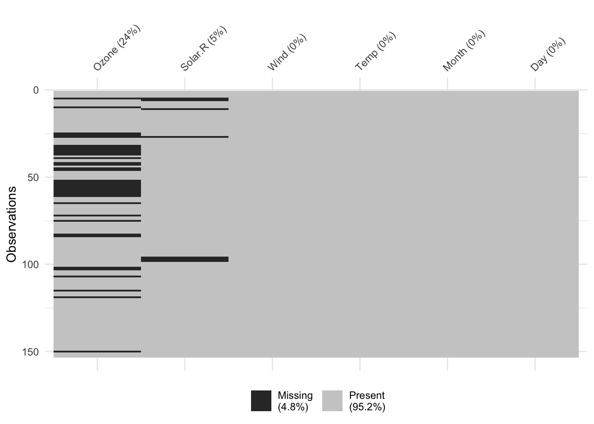
# A tibble: 6 × 3
variable n_miss pct_miss
<chr> <int> <num>
1 Ozone 37 24.2
2 Solar.R 7 4.58
3 Wind 0 0
4 Temp 0 0
5 Month 0 0
6 Day 0 0 By Case
We can explore how much missingness there is for each case with naniar::miss_case_summary(). For each case, this function calculates the number and percentage of variables with a missing value.
Impact of Information: If the pct_miss column is large for a case, we likely won’t be able to impute any of its missing values because there just isn’t enough known information–this case will have to be dropped from the analysis.
Missingness Mechanisms
Assessing missingness mechanisms involves checking if missingness in a variable is related to other variables.
Note: Through our available data, we are really only able to explore the potential for MCAR or MAR mechanisms.
Impact of Information: There is always the chance that unobserved information (unobserved other variables or unobserved values of the variables we do have) is related to missingness for our variables, so to think through the potential for MNAR, more contextual information is necessary.
To explore these relationships, we can create TRUE/FALSE indicators of whether a variable is missing. In the plots below, we use is.na(Ozone) to explore whether cases with missing ozone values are noticeably different from cases with observed ozone values in terms of Solar.R.
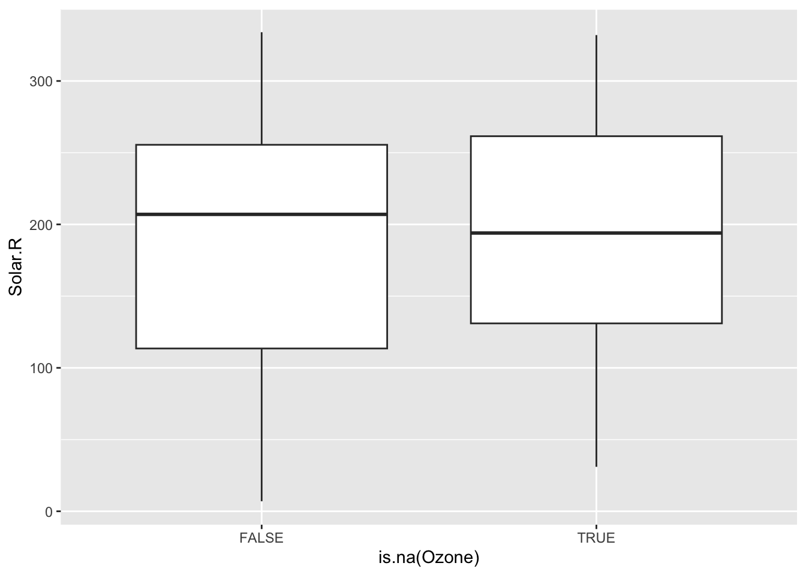
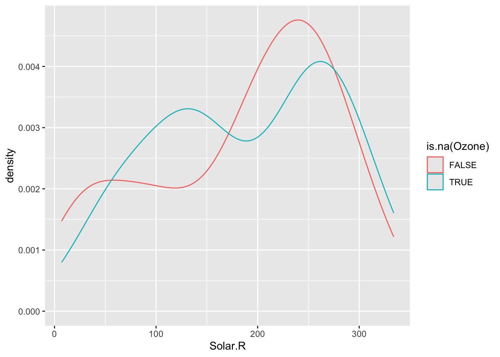
The above boxplots and density plots suggest that missing ozone is not strongly related to solar radiation levels.
We still should check if ozone missingness is related to the Wind, Temp, Month, and Day variables (to be done in Exercises).
In addition to checking if the chance of ozone missingness is related to Solar.R, we should check if the values of ozone could be predicted by Solar.R.
In the scaterrplot below, we look at the relationship between Ozone and Solar.R and use vertical lines to indicate the Solar.R values for cases that are missing Ozone.
-
Impact of Information: We see that missing
Ozonecases are within the observed span ofSolar.R, so we would be ok with predictingOzonefromSolar.Rbecause there would be no extrapolation.
✏️ Compare Alternate Situations
Look at the boxplot + scatterplot pairs for Alternate Situations 1 and 2 below. How do these situations compare to our actual situation and to each other? What concerns might arise from using a model to impute Ozone?
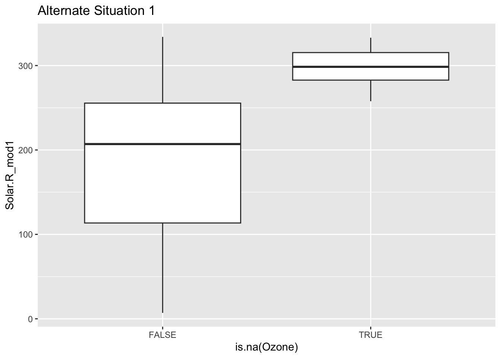
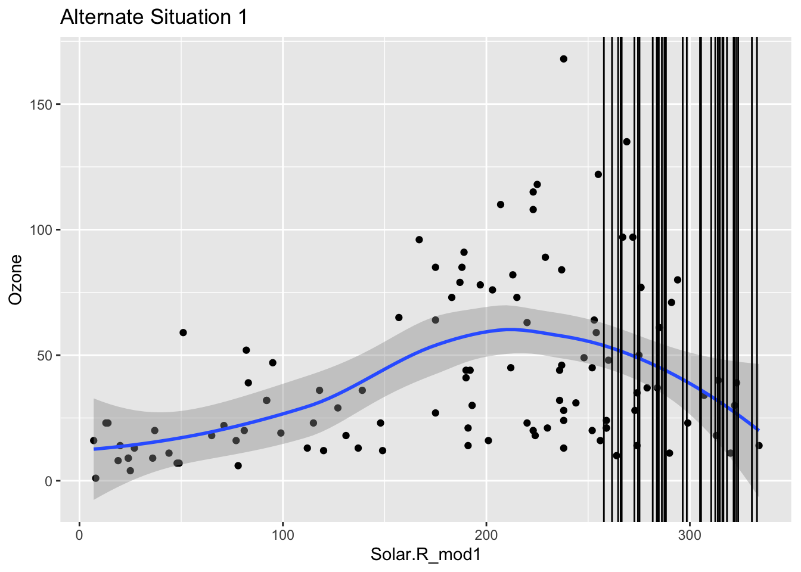
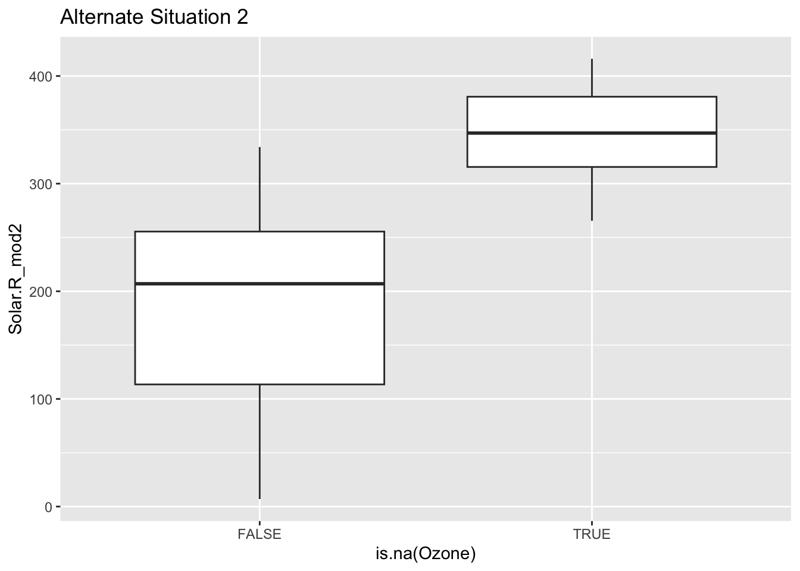
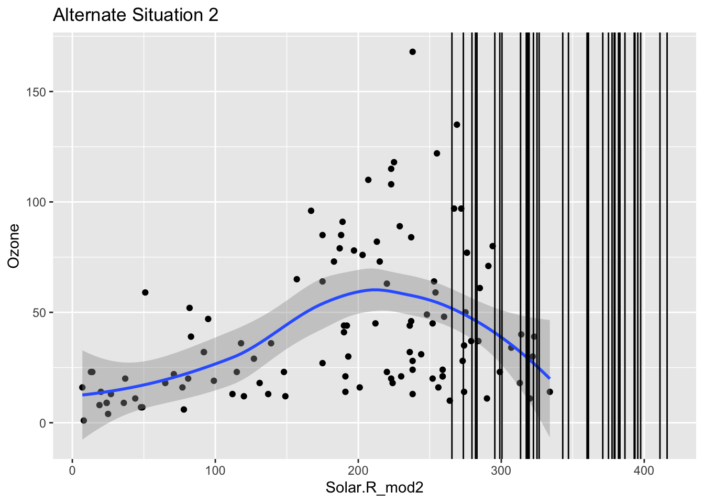
Ozone is missing when solar is at higher values for both alternative situations.
In Alt 1 version, we have some observed data in the range of Solar for where Ozone is missing so we could predict it fairly well.
In Alt 2 version, Ozone is missing when Solar is beyond the values of our observed data so we don’t have good sense of what the relationship would be between Solar and Ozone.
✏️ Investigate Ozone Missingness
Continue the investigation of missingness for Ozone.
We want to see how Month, Wind, and Temp relate to the chance of missingness for Ozone and to the value of Ozone.
Does it look like a linear regression model (perhaps with variable transformations) could be effective in imputing the missing ozone data?
Missingness (MAR or potentially MNAR) of Ozone is related to:
Month: More likely in June Value of Ozone is related to:
Month: Higher in July and August Wind: Lower when wind is higher Temp: Higher when temp is higher
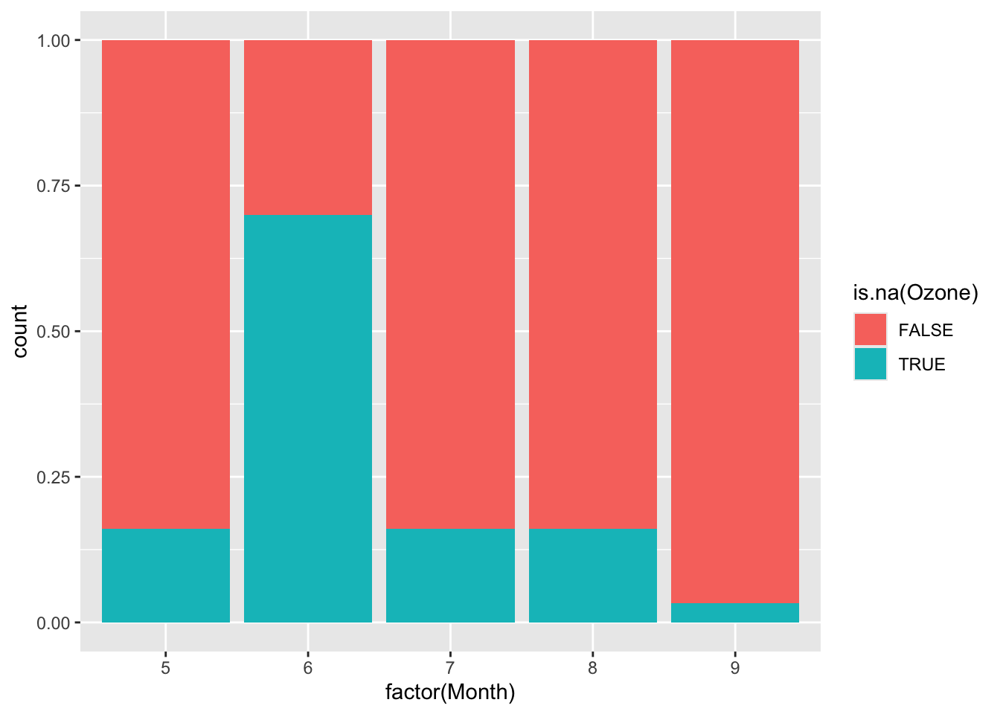
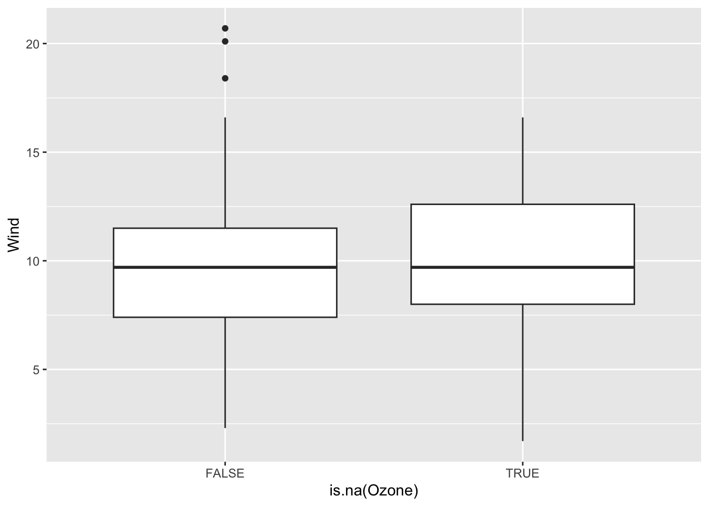
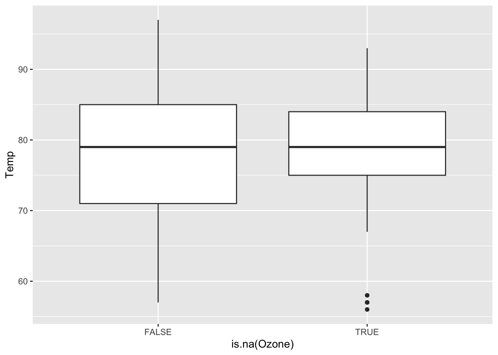
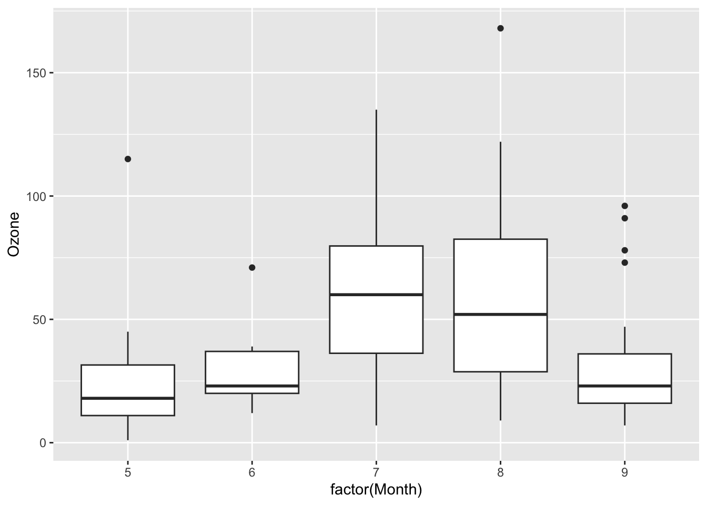
Regression Imputation
When a model is built and used to generate a single set of predictions for missing values, this is known as single imputation.
- When using singly imputed data in subsequent modeling, the uncertainty in estimates tends to be underestimated. This means that:
- Standard errors are lower than they should be.
- Confidence intervals won’t contain the true parameter value the “advertised” percentage of times
- e.g., 95% confidence intervals will not contain the truth in 95% of samples–the coverage probability will be less than 95%
In multiple imputation, multiple imputed datasets are generated with different values for the filled-in data.
- Subsequent models are fit on each of these datasets, and both estimates and uncertainty measures are pooled across all of these fits.
- Multiple imputation more accurately estimates uncertainty measures.
Simulation Studies
We can use a simulation study to investigate the statistical properties described above.
- Generate (simulate) data where we are in control of missing data mechanisms and the true relationship between an outcome and the predictors.
- On that simulated data, use single imputation to fill in the missing values. Fit the desired model, and obtain a confidence interval for a coefficient of interest.
- On that simulated data, use multiple imputation to fill in the missing values. Fit the desired models on all imputed datasets, pool results, and obtain a confidence interval for a coefficient of interest.
- Steps 1 - 3 are repeated a lot of times (
num_simulations <- 1000) to see how things work out in lots of different samples. - Summarize the performance of single and multiple imputation across the
num_simulationssimulations.
We will slowly step through the simulation study code below. We will pause frequently for you to add comments documenting what is happening.
Helper Functions
Let’s start with few functions.
Code
# enerate simulation data of size n
gen_sim_data <- function(n) {
tibble::tibble(
# generate values from a uniform distribution b/w 0 & 1
# this the independent variable
x1 = runif(n, min = 0, max = 1),
# create second variable that correlates with x1
# but include some random (normally distributed) noise
x2 = x1 + rnorm(n, mean = 0, sd = 1),
# the missingness trigger, the probability of being 1 (missing)
# depend on x1 (because of the Binomial distribution). If x1 is high,
# the data is more likely to be missing
x2_miss_bool = rbinom(n, size = 1, prob = x1/2),
# apply the trigger
x2_NA = dplyr::if_else(x2_miss_bool == 1, NA, x2),
# the outcome variable which is a linear combination of
# the original (complete) x1 & x2 plus some random error
y = x1 + x2 + rnorm(n, mean = 0, sd = 1)
)
}Code
# given some data, build imputation model with m = num
build_imputation_model <- function(data, num) {
# Multiple Imputation by Chained Equations (MICE)
mice_obj <- mice::mice(data |> dplyr::select(x1, x2_NA, y),
m = num, # num of dataset versions to generate
method = "norm", # Bayesian liner regression
printFlag = FALSE)
# run the model on every dataset version
with(mice_obj, lm(y ~ x1 + x2_NA))
}Code
# pull the CI of a multiple imputation model
get_multiple_imputation_ci <- function(multiple_imputation_models) {
pooled_res <- mice::pool(multiple_imputation_models)
summ_pooled_res <- summary(pooled_res, conf.int = TRUE, conf.level = 0.95)
ci_lower <- summ_pooled_res |> dplyr::filter(term == "x2_NA") |> dplyr::pull(`2.5 %`)
ci_upper <- summ_pooled_res |> dplyr::filter(term == "x2_NA") |> dplyr::pull(`97.5 %`)
c(ci_lower, ci_upper)
}Run Simulation
The following code chunk uses the functions defined above to run the simulation. Note that the process may take a few minutes.
Code
set.seed(224)
num_simulations <- 10
dataset_size <- 100
# prepare empty vector for faster data handling
ci_list <- vector("list", length = num_simulations)
system.time({
for (i in 1:num_simulations) {
sim_data <- gen_sim_data(dataset_size)
model_single <- build_imputation_model(sim_data, 1)
ci_single <- get_single_imputation_ci(model_single)
model_multiple <- build_imputation_model(sim_data, 10)
ci_multiple <- get_multiple_imputation_ci(model_multiple)
ci_list[[i]] <- tibble::tribble(
~imputation, ~ci_lower, ~ci_upper,
"single", ci_single[1], ci_single[2],
"multiple", ci_multiple[1], ci_multiple[2]
)
}
}) user system elapsed
0.581 0.010 0.596 Summarize Results
Below we compute the confidence interval (CI) coverage probability (fraction of times the CI contains the true value of 1) for the CIs generated from single and multiple imputation:
Done!
- Check the ICA Instructions for how to (a) push your code to GitHub and (b) update your portfolio website